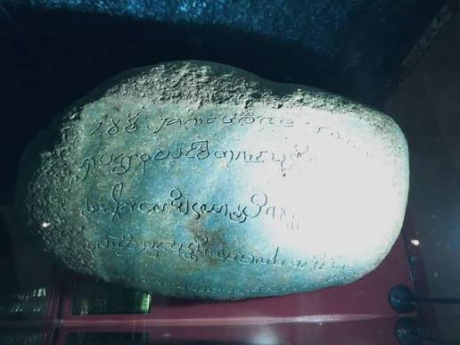

Menapaki rekaman sejarah lebih dari 13 abad: dari catatan prasasti batu abad ke-7,
kedaulatan maritim Kesultanan Palembang Darussalam, hingga perjuangan gigih mempertahankan kemerdekaan Republik Indonesia.
Palembang tercatat secara resmi sebagai kota tertua di Indonesia yang memiliki bukti prasasti tertulis.
Letak geografisnya yang sangat strategis di pesisir timur Pulau Sumatera serta dialiri Sungai Musi yang lebar dan dalam
menjadikan kawasan ini sebagai gerbang perniagaan internasional sejak zaman kuno, mempertemukan kebudayaan Nusantara dengan para saudagar dari Tiongkok, India, dan Timur Tengah.
Epigrafi Kuno • Tahun 682 Masehi
1. Prasasti Kedukan Bukit dan Tonggak Kelahiran Kota

Dokumentasi Prasasti Kedukan Bukit yang ditemukan di tepi Sungai Tatang, Palembang.
Bukti autentik berdirinya Kota Palembang tercantum pada sebongkah batu bertulis berhuruf Pallawa dan berbahasa Melayu Kuno
yang dikenal sebagai Prasasti Kedukan Bukit. Ditemukan oleh C.J. Batenburg pada tanggal 29 November 1920 di Kampung Kedukan Bukit,
tepi Sungai Tatang (anak Sungai Musi), prasasti ini memuat angka tahun 604 Saka atau bertepatan dengan 16 Juni 682 Masehi.
Isi prasasti meriwayatkan tentang Dapunta Hyang yang melakukan perjalanan suci (siddhayatra) menggunakan perahu bersama 20.000 bala tentara
dari Minanga Tamwan. Beliau kemudian mendirikan sebuah pemukiman perkotaan (wanua) yang makmur dan sejahtera di Palembang.
Atas dasar dokumen bersejarah inilah, tanggal 16 Juni secara resmi diperingati setiap tahunnya sebagai Hari Jadi Kota Palembang.
Abad ke-7 sampai Abad ke-13 Masehi
2. Sriwijaya: Poros Maritim dan Pusat Pembelajaran Dunia
Pada puncak kejayaannya di bawah Dinasti Syailendra, Kerajaan Sriwijaya berkembang menjadi kekuatan thalassocracy (kemaharajaan maritim)
terbesar di kawasan Asia Tenggara. Sriwijaya memegang kendali penuh atas jalur pelayaran komersial Selat Malaka dan Selat Sunda,
mengontrol peredaran komoditas bernilai tinggi seperti rempah-rempah, emas, kapur barus, dan gaharu.
Selain supremasi ekonomi, Palembang berperan sebagai pusat keilmuan agama Buddha terkemuka di dunia.
Biksu asal Tiongkok, I-Tsing (Yijing), singgah dan menetap di Palembang selama bertahun-tahun pada kurun waktu 671 dan 685–695 Masehi.
Dalam catatannya, I-Tsing merekomendasikan para cendekiawan yang hendak menuntut ilmu ke Nalanda (India) untuk terlebih dahulu tinggal
di Sriwijaya guna mempelajari tata bahasa Sanskerta dan ajaran Dharma.
Memasuki abad ke-17, pengaruh Islam mengakar kuat di Sumatera Selatan dengan berdirinya Kesultanan Palembang Darussalam pada tahun 1659
di bawah kepemimpinan Ki Mas Hindi (bergelar Pangeran Ario Kesumo Cirebon / Sultan Abdurrahman).
Kesultanan ini menghasilkan mahakarya peradaban, termasuk pembangunan Benteng Kuto Besak (BKB) yang diprakarsai oleh Sultan Mahmud Badaruddin I
dan diselesaikan pada masa Sultan Mahmud Bahauddin sekitar tahun 1780-an.
Benteng Kuto Besak berdiri kokoh di tepian Sungai Musi dengan struktur batu bata yang direkatkan menggunakan adonan tradisional putih telur dan kapur.
Benteng ini menjadi pusat pertahanan dalam menghadapi gempuran pasukan kolonial Inggris dan Hindia Belanda, terutama pada Perang Menteng (1819)
di bawah komando pahlawan nasional Sultan Mahmud Badaruddin II yang gigih menolak tunduk pada kekuasaan asing.
Zaman Perjuangan Kemerdekaan • 1947 hingga Sekarang
4. Pertempuran Lima Hari Lima Malam & Transformasi Kota
Pasca Proklamasi Kemerdekaan Indonesia 1945, rakyat Palembang kembali menunjukkan semangat juang yang luar biasa.
Pada tanggal 1–5 Januari 1947, meletus pertempuran sengit yang dikenal dengan Perang Lima Hari Lima Malam antara tentara Republik Indonesia
bersama laskar rakyat melawan pasukan Sekutu dan NICA (Belanda) yang berupaya merebut kembali instalasi kilang minyak strategis di Plaju dan Sungai Gerong.
Kini, Palembang telah bermetamorfosis menjadi kota metropolitan modern yang harmonis. Pembangunan Jembatan Ampera pada tahun 1965,
suksesnya penyelenggaraan ajang olahraga internasional seperti SEA Games 2011 dan Asian Games 2018 di Jakabaring Sport City,
serta hadirnya LRT Sumatera Selatan sebagai sistem kereta ringan perdana di Tanah Air menjadi bukti bahwa semangat kebesaran Sriwijaya terus hidup di era modern.
⏳
Tabel Linimasa Sejarah Penting Palembang
Tahun / Periode
Peristiwa Sejarah
Dampak & Makna Historis
682 Masehi
Pemahatan Prasasti Kedukan Bukit
Tonggak berdirinya permukiman wanua Sriwijaya dan penetapan Hari Jadi Kota Palembang.
Abad 7–13 M
Puncak Kejayaan Maritim Sriwijaya
Penguasa jalur dagang Selat Malaka dan kiblat pendidikan agama Buddha di Asia Tenggara.
1659 Masehi
Pendirian Kesultanan Palembang
Peralihan era menuju kesultanan maritim bernapaskan nilai-nilai syiar Islam.
1780 Masehi
Pembangunan Benteng Kuto Besak
Kraton pertahanan militer independen pertama di Indonesia yang dibangun oleh pribumi.
1819–1821 M
Perang Melawan Kolonial Belanda
Perlawanan heroik Sultan Mahmud Badaruddin II sebelum akhirnya diasingkan ke Ternate.
1947 Masehi
Perang Lima Hari Lima Malam
Perjuangan heroik tentara dan rakyat Palembang mempertahankan kedaulatan kemerdekaan RI.
1965 Masehi
Peresmian Jembatan Ampera
Lahirnya ikon pemersatu kawasan Seberang Ulu dan Seberang Ilir di atas Sungai Musi.